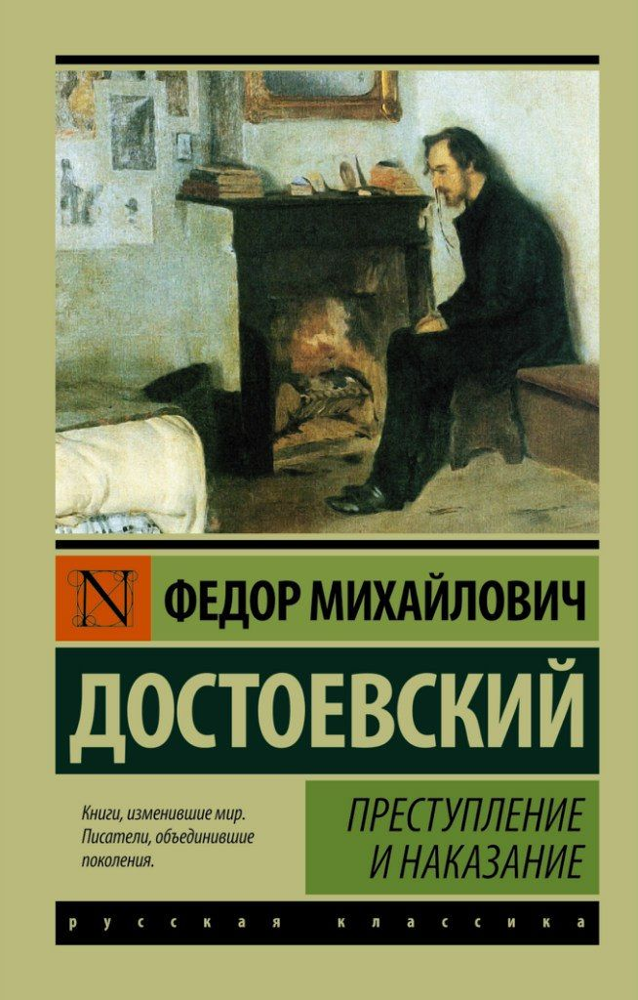
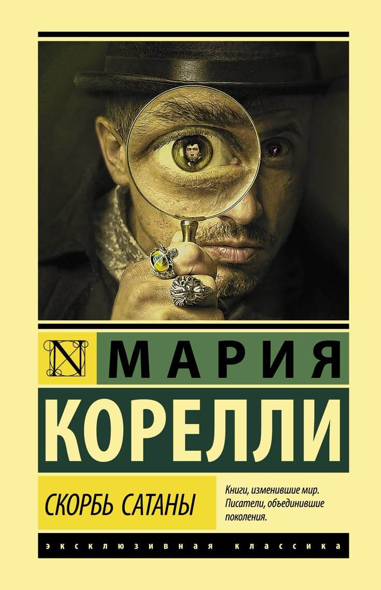
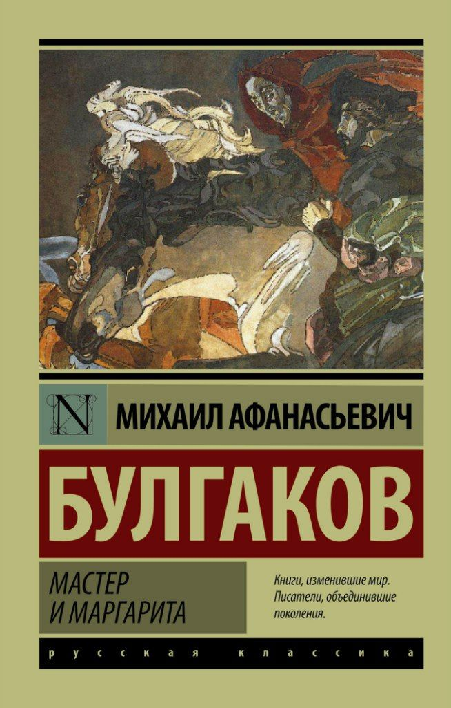

Преступление и наказание
История о том, как теория, рожденная в воспаленном мозгу, разбивается о реальную жизнь и человеческую природу.
Читать полностью →О блоге
«Корешок» является разработкой юного программиста, который помимо цифр и кода страстно увлекается литературой. На сайте нет никакой профессиональной критики - только живые оценки и отзывы на прочитанные произведения. Целью данного детища является небольшой отдых от нулей и единиц.
ОСТОРОЖНО: на сайте присутствует много мыслей на полях и личного мнения! (не рекомендуется к прочтению ценителей сухих отзывов, сгенерированных нейросетями).
Я пишу исключительно про книги, которые читаю сама, а не про те, которые следовало бы прочитать всем. По моему сугубо личному мнению, не существует уникальной литературы: кому-то нравятся глубокие тёмные детективы, а кто-то до дыр изучил любимую книгу рецептов. И кто из них не прав?
Автор блога не одну собаку съел на детективах и романах, поэтому им будет посвящено большинство рецензий. Надеюсь, что мои рецензии позволят кому-то раскрыть любимое произведение по-новому или побудят прочитать давно откладываемую книгу. Главный критик сайта также не чурается фантастики и научной литературы, поэтому рецензии на них также зачешутся где-то между строк.
Кто такой любимый писатель? – это человек, который пишет так, что аж до мурашек пробирает. Ввиду такого определения сразу извинюсь, что в некоторых рецензиях буду особенно предвзята. Я тоже человек и имею своих фаворитов, которых невозможно оценивать по существующим критериям. Их истории бьют напрямую в душу, не давая возможности остаться равнодушным. Возвращение к их историям – это не повторение ранее изученного материала, а подчёркивание чего-то нового, чего-то ранее не заметного глазу. Особое удовольствие приносит возвращение к таким историям спустя годы, когда набираешься жизненного опыта и способен воспринимать больше так называемых «отсылок».
Данный блог ведёт нынешний программист, а в прошлом - редактор небольшого детского журнала и победитель конкурса журналистики. «Корешок» вырос из идеи хранить где-то свои мысли о прочитанных произведениях, которых с каждым месяцем становится только больше и больше.
Надеюсь, что разработанный сайт закроет сразу два гештальта: станет рабочим пространством для дисциплины «Вёрстка и прототипирование сайтов» и хранилищем рецензий на различные произведения.
Что я читаю
Глубокие тёмные истории, где каждый персонаж - загадка. Мой главный жанр.
подробнее...Миры, где возможно всё. От научной фантастики до фэнтези.
подробнее...Истории, которые бьют в душу. Про любовь, потери и рост.
подробнее...Книги, которые расширяют кругозор и меняют взгляд на мир.
подробнее...Мои мысли

История о том, как теория, рожденная в воспаленном мозгу, разбивается о реальную жизнь и человеческую природу.
Читать полностью →
Ироничная и пугающая история о том, что бывает, когда дьявол исполняет все твои желания, но с очень интересной формулировкой.
Читать полностью →
Роман, который невозможно пересказать. Мистика, сатира, любовь и вечный спор о добре и зле на страницах одной книги.
Читать полностью →Мысли на полях
«Зло всегда содержит ростки саморазрушения.»
«Всякий человек сам себя воспитать должен.»
«Да, человек смертен, но это было бы ещё полбеды. Плохо то, что он иногда внезапно смертен, вот в чём фокус!»
Что прочитано